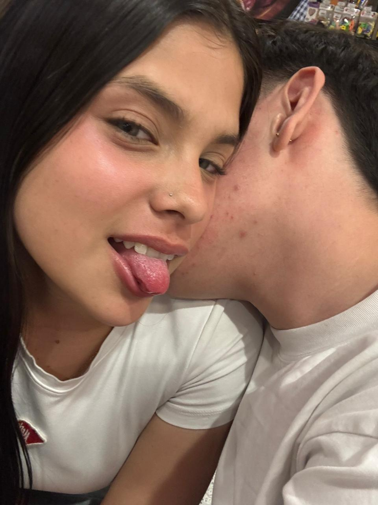
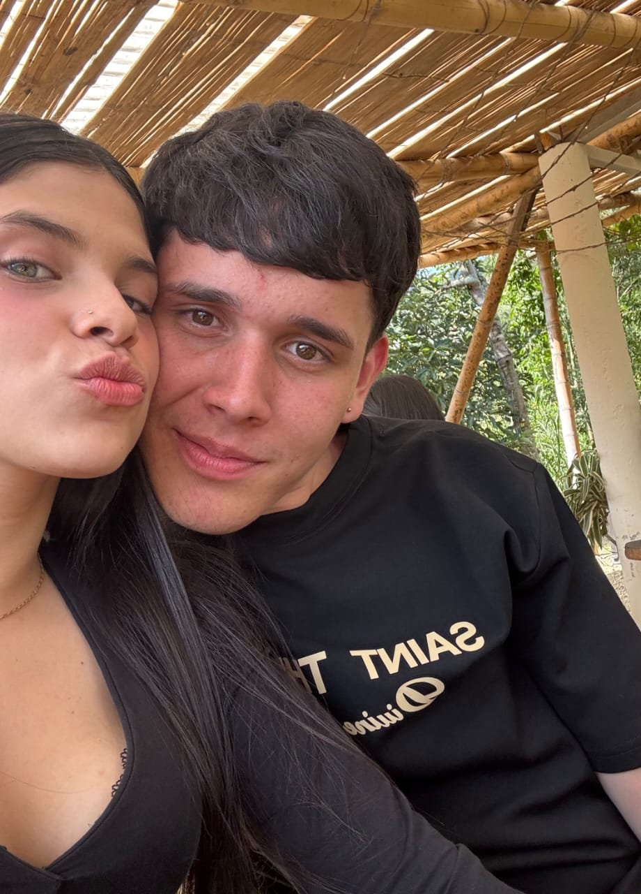
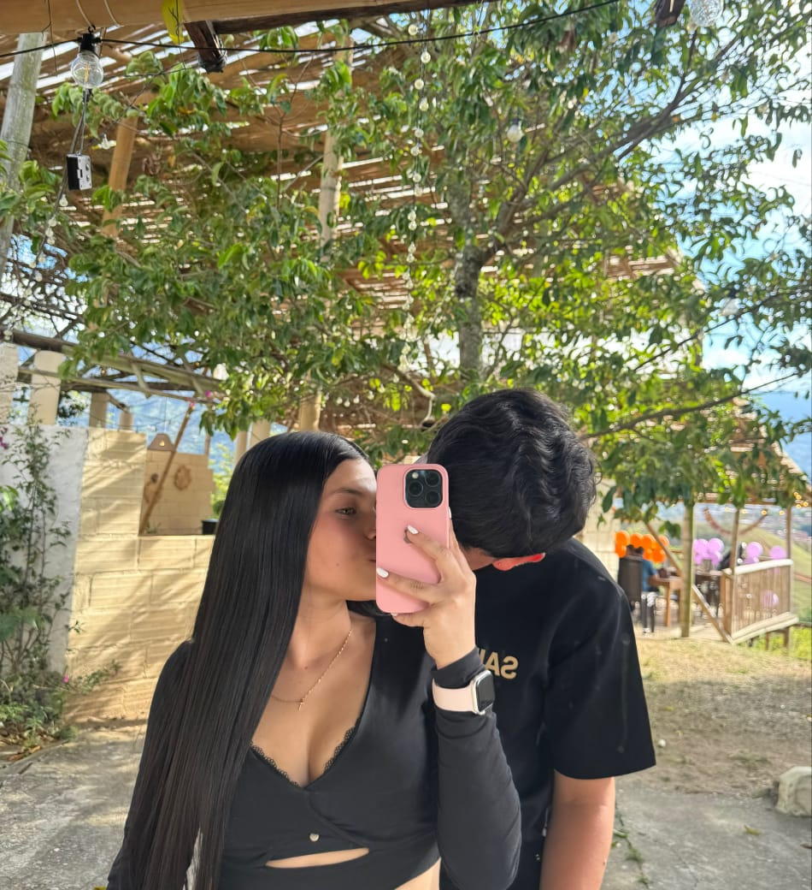

Nuestro
Segundo Mes
¡Feliz segundo mes, amor!
Desde el 1 de Agosto de 2026, mi vida cambió por completo. Gracias por ser mi paz, mi hogar y mi razón para sonreír cada día. Cada momento contigo es un regalo que atesoro en lo más profundo de mi corazón. 💕
Nuestros Momentos
Un recorrido por las sonrisas, miradas y abrazos que hemos compartido. Pasa el cursor o toca cada tarjeta para descubrir su mensaje secreto 💌

Nuestro primer recuerdo
Toca para leer más ✨
El principio
Amor, esta foto guarda el latido de nuestro primer capítulo. Desde ese instante, supe que mi corazón había encontrado su lugar favorito del mundo entero. No imaginaba cuánta felicidad cabría en una sola mirada tuya. 🌹

Risas compartidas
Toca para leer más ✨
Tus risas
Tu risa es mi melodía favorita, amor. Cuando te escucho reír, todo lo demás se detiene y el mundo se llena de color. Prometo hacerte reír todos los días de nuestra vida. 😊

Aventura juntos
Toca para leer más ✨
Nuestra ruta
Cada salida, cada camino, cada lugar nuevo se convierte en mágico simplemente porque estás a mi lado. El destino no importa, mientras viajemos juntos de la mano. 🗺️💖
Un dia mágico
Toca para leer más ✨
Bajo las estrellas
Las días contigo son mis favoritos. Tus palabras susurradas, tus silencios cómodos, la calma de tu presencia... Brillas más que todas las estrellas del universo para mí. 🌙⭐
Nuestra calma
Toca para leer más ✨
Mi hogar
Amor, en tus brazos encontré mi hogar. No necesito grandes cosas, solo tu mano entrelazada con la mía, tu respiración cerca y la certeza de que contigo todo es posible. 🏡💞
Y muchos más...
Por escribir juntos ✨
Nuestro futuro
Este es solo el comienzo de nuestra historia. Imagino miles de fotos más, viajes, risas, abrazos y días soleados a tu lado. Te elijo hoy, mañana y siempre, mi vida. 🚀💖
Nuestra Película
El instante en movimiento que guardo como un tesoro. Presiona reproducir y revivámoslo juntos, amor 🎬💕
Nuestro Beso Favorito
Amor, cada beso tuyo es mi momento preferido del día. La calma, el calor, la sensación de que todo está bien mientras nuestros labios se encuentran. No cambiaría esto por nada del mundo. Gracias por ser mi película favorita, con inicio, nudo y un final sin fin. 💋💕
Frasco de Razones
Cada día hay más motivos para amarte. Saca una nota y descubre una nueva razón por la que eres mi persona favorita 🏺💌
¿Listo, amor?
Abre el corazón y saca una razón. Cada nota está escrita con todo mi amor, pensando en cada detalle maravilloso que eres para mí. 💝
Razón 0 del corazón 💫
Te amo,
mi amor
Dos meses. Dos meses de descubrir cada día lo afortunado/a que soy de tenerte. Dos meses de aprender que el amor verdadero se construye con detalles, con escuchas, con paciencia y con miradas que dicen más que mil palabras.
Gracias por ser tú. Por hacerme sentir en casa. Por cada "buenos días" y cada "buenas noches". Por tu risa, por tus manos, por tu corazón. Aquí estaré, eligiéndote en cada versión de mi vida.
Feliz segundo mes, vida mía
Desde el 01 · 08 · 2026 — y para siempre. 💕